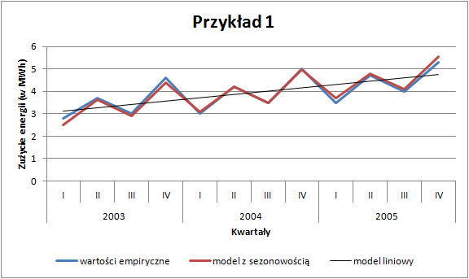

6 Sezonowość
Jednym z rodzajów szeregu statystycznego jest szereg czasowy, który można zdefiniować jako ciąg obserwacji jakiegoś zjawiska w kolejnych jednostkach czasu (latach, kwartałach, miesiącach). Rozważane zjawisko może podlegać pewnym prawidłowościom, których wykrycie i opis jest celem analizy szeregów czasowych. Najczęściej rozważa się cztery czynniki wpływające na rozwój zjawiska w czasie:
- trend (\(T_t\)) — długookresowe, systematyczne zmiany, jakim podlega dane zjawisko,
- wahania sezonowe (\(S_t\)) — regularne odchylenia od tendencji rozwojowej (trendu) związane np. z porami roku (warunkami klimatycznymi),
- wahania cykliczne (\(C_t\)) — związane z cyklem koniunkturalnym,
- wahania przypadkowe (\(I_t\)) — nieregularne zmiany.
Analiza danych, które mogą charakteryzować się sezonowością rozpoczyna się od wizualizacji oraz estymacji parametrów modelu liniowego. W tym celu posłużymy się dwoma przykładami. Pierwszy będzie dotyczył zużycia energii elektrycznej, a drugi przewozów ładunków w Polsce - plik.
W obu przypadkach dysponujemy danymi kwartalnymi za lata 2003–2005. Na pierwszy rzut oka możemy wskazać pewne prawidłowości: zużycie energii jest widocznie wyższe w drugich i czwartych kwartałach analizowanych lat. Z kolei przewozy ładunków wzrastają od kwartału pierwszego do trzeciego (w którym osiągają maksimum w danym roku), by następnie spaść.
Celem analizy będzie ilościowe określenie wielkości zmian sezonowych, tak aby było możliwe prognozowanie z uwzględnieniem tych czynników.
6.1 Trend liniowy
Pierwszym krokiem w analizie szeregu czasowego jest estymacja parametrów trendu liniowego.
Dla przykładu pierwszego dotyczącego zużycia energii funkcja regresji przyjmuje następującą postać:
\[\hat{y}_{t}=0,15 \cdot t+2,99\]
w której współczynnik kierunkowy informuje o tym, że z kwartału na kwartał zużycie energii rosło przeciętnie o 0,15 MWh. Z kolei wyraz wolny równy 2,99 oznacza, że w okresie \(t=0\) czyli w IV kwartale 2002 roku, teoretyczne zużycie energii wynosiło 2,99 MWh.
W drugim z analizowanych przykładów — przewozów ładunków — model wyglądał następująco:
\[\hat{y}_{t}=0,38 \cdot t+25,13\]
co oznacza, że z kwartału na kwartał przewóz ładunków wzrastał średnio o 0,38 mln ton, natomiast w IV kwartale 2002 roku modelowa wartość przewozów ładunków wynosiła 25,13 mln ton.
Na podstawie wyznaczonych funkcji regresji można obliczyć wartości teoretyczne (\(\hat{y}_t\)) zużycia energii oraz przewozów ładunków i pod postacią prostej przestawić na wykresie.


Otrzymane wartości wynikające z funkcji trendu (\(\hat{y}_t\)) mają charakter liniowy i prawdę rzecz ujmując słabo dopasowują się do danych empirycznych. Współczynnik \(R^2\) w przykładzie pierwszym wynosi 41%, a w przykładzie drugim tylko 37%. Ponadto, jeśli chcielibyśmy prognozować na kolejne okresy to według funkcji trendu wartości zużycia energii dla kwartałów pierwszych byłyby przeszacowane, a dla kwartałów czwartych niedoszacowane. Stąd zachodzi potrzeba uwzględnienia w modelu występowania sezonowości, którą obserwujemy w danych.
Pierwszym krokiem jest identyfikacja rodzaju tej sezonowości. Może ona mieć charakter addytywny — wtedy wahania sezonowe są stałe w poszczególnych okresach (por. przykład 1) lub multiplikatywny, kiedy czynniki sezonowe są proporcjonalne do funkcji trendu (por. przykład 2). W zależności od zidentyfikowanego charakteru należy obliczyć wskaźniki sezonowości. W pierwszej kolejności rozważymy model addytywny.
6.2 Model addytywny
Analizę modelu addytywnego należy rozpocząć od wyznaczenia różnic pomiędzy wartościami empirycznymi (\(y\)) a modelowymi (\(\hat{y}\)) dla poszczególnych okresów zgodnie ze wzorem:
\[S^i_t=y_t-\hat{y}_t\]
Następnie dla każdego z analizowanych podokresów (półroczy, kwartałów, miesięcy) oblicza się surowe wskaźniki sezonowości uśredniając wyznaczone wcześniej różnice:
\[S_i=\frac{\sum\limits_{i=1}^{m}{S_t^i}}{p}\]
gdzie:
- \(m\) — liczba podokresów (półroczy, kwartałów, miesięcy),
- \(p\) — liczba analizowanych lat.
W analizowanym przez nas przykładzie musimy wyznaczyć surowe wskaźniki sezonowości dla każdego kwartału. Ponadto jeśli spełniona będzie zależność \(\sum\limits_{i=1}^{m}{S_i}=0\) to oznacza, że wskaźniki sezonowości są wolne od wahań przypadkowych. W praktyce jednak rzadko zdarza się taka sytuacja. W takim przypadku należy jeszcze wyznaczyć współczynnik korygujący zgodnie z wzorem:
\[k=\frac{\sum\limits_{i=1}^{m}{S_i}}{m}\]
a następnie skorygować surowe wskaźniki sezonowości według formuły
\[So_{i}=S_i-k\]
otrzymując tzw. oczyszczone wskaźniki sezonowości, które informują o średnich odchyleniach od funkcji trendu w poszczególnych podokresach. Dla tych wskaźników zachodzi zależność: \(\sum\limits_{i=1}^{m}{So_{i}}=0\). W przykładzie 1 oczyszczone wskaźniki sezonowości dla poszczególnych kwartałów są równe:
| Wskaźnik | Wartość | Interpretacja |
|---|---|---|
| \(So_{1}\) | -0,62 | w pierwszych kwartałach lat 2003–2005 zużycie energii było mniejsze średnio o 0,62 MWh niż wynika to z funkcji trendu |
| \(So_{2}\) | 0,33 | w drugich kwartałach lat 2003–2005 zużycie energii było większe średnio o 0,33 MWh niż wynika to z funkcji trendu |
| \(So_{3}\) | -0,51 | w trzecich kwartałach lat 2003–2005 zużycie energii było mniejsze średnio o 0,51 MWh niż wynika to z funkcji trendu |
| \(So_{4}\) | 0,81 | w czwartych kwartałach lat 2003–2005 zużycie energii było większe średnio o 0,81 MWh niż wynika to z funkcji trendu |
| Suma | 0,00 | wskaźniki sezonowości są wolne od wahań przypadkowych |
Kolejnym etapem analizy jest wyznaczenie zmodyfikowanych wartości teoretycznych uwzględniających sezonowość. Te wartości oznaczane jako \(\hat{y}^*\) uzyskujemy dodając do wartości teoretycznych (\(\hat{y}\)) odpowiednie dla poszczególnych podokresów oczyszczone wskaźniki sezonowości \(So_i\). Formalny zapis jest następujący:
\[\hat{y}^*=\hat{y}+So_i\]
Wartości \(\hat{y}^*\) przedstawione na wykresie już znacznie lepiej pasują do posiadanych danych empirycznych:

Na podstawie tak zmodyfikowanego modelu można prognozować przyszłe wartości z dużo większą precyzją. Prognozowanie w modelu addytywnym polega na podstawieniu numeru okresu dla którego się prognozuje do funkcji trendu, a następnie dodanie odpowiedniego wskaźnika sezonowości:
\[\hat{y}_{T}^{P}=\hat{y} + So_i=a_1 \cdot T + a_0 + So_i\]
Interesuje nas prognozowane zużycie energii w IV kwartale 2008 roku. Ten okres przyjmuje wartość \(t=24\), natomiast wskaźnik sezonowości dla czwartego kwartału jest równy 0,81 MWh. Powyższe wartości podstawiamy do wzoru:
\[\hat{y}_{24}^{P}=0,15 \cdot 24 + 2,99 + 0,81 = 7,4\]
co oznacza, że prognozowane zużycie energii w IV kwartale 2008 roku wyniesie 7,4 MWh.
6.3 Model multiplikatywny
W modelu multiplikatywnym zamiast różnic pomiędzy wartościami teoretycznymi a modelowymi oblicza się ich iloraz zgodnie ze wzorem:
\[S^i_t=\frac{y_t}{\hat{y}_t}\]
Następnie dla każdego z analizowanych podokresów (półroczy, kwartałów, miesięcy) oblicza się surowe wskaźniki sezonowości uśredniając wyznaczone wcześniej ilorazy:
\[S_i=\frac{\sum\limits_{i=1}^{m}{S_t^i}}{p}\]
gdzie:
- \(m\) — liczba podokresów (półroczy, kwartałów, miesięcy),
- \(p\) — liczba analizowanych lat.
W analizowanym przez nas przykładzie musimy wyznaczyć surowe wskaźniki sezonowości dla każdego kwartału. W przypadku sezonowości multiplikatywnej zależność oznaczająca, że wskaźniki sezonowości są wolne od wahań przypadkowych jest wyrażona następująco: \(\sum\limits_{i=1}^{m}{S_i}=m\). W praktyce jednak rzadko zdarza się taka sytuacja. W takim przypadku należy jeszcze wyznaczyć współczynnik korygujący zgodnie z wzorem:
\[k=\frac{\sum\limits_{i=1}^{m}{S_i}}{m}\]
a następnie skorygować surowe wskaźniki sezonowości według formuły
\[So_{i}=S_i/k\]
otrzymując tzw. oczyszczone wskaźniki sezonowości, które informują o średnich odchyleniach od funkcji trendu w poszczególnych podokresach. Dla tych wskaźników zachodzi zależność: \(\sum\limits_{i=1}^{m}{So_{i}}=m\). W przykładzie 2 oczyszczone wskaźniki sezonowości możemy zapisać w postaci procentowej i dla poszczególnych kwartałów są równe:
| Wskaźnik | Wartość | Interpretacja |
|---|---|---|
| \(So_{1}\) | 96,5% | w pierwszych kwartałach lat 2003–2005 rzeczywiste przewozy były średnio o 3,5% niższe niż wynika to z funkcji trendu |
| \(So_{2}\) | 100,1% | w drugich kwartałach lat 2003–2005 rzeczywiste przewozy były średnio o 0,1% wyższe niż wynika to z funkcji trendu |
| \(So_{3}\) | 108,9% | w trzecich kwartałach lat 2003–2005 rzeczywiste przewozy były średnio o 8,9% wyższe niż wynika to z funkcji trendu |
| \(So_{4}\) | 94,5% | w czwartych kwartałach lat 2003–2005 rzeczywiste przewozy były średnio o 5,5% niższe niż wynika to z funkcji trendu |
| Suma | 400,00% | wskaźniki sezonowości są wolne od wahań przypadkowych |
Kolejnym etapem analizy jest wyznaczenie zmodyfikowanych wartości teoretycznych uwzględniających sezonowość. Te wartości oznaczane jako \(\hat{y}^*\) uzyskujemy mnożąc wartości teoretyczne (\(\hat{y}\)) odpowiednie dla poszczególnych podokresów przez oczyszczone wskaźniki sezonowości \(So_i\). Formalny zapis jest następujący:
\[\hat{y}^*=\hat{y} \cdot So_i\]
Wartości \(\hat{y}^*\) przedstawione na wykresie już znacznie lepiej pasują do posiadanych danych empirycznych:

Na podstawie tak zmodyfikowanego modelu można prognozować przyszłe wartości z dużo większą precyzją. Prognozowanie w modelu multiplikatywnym polega na podstawieniu numeru okresu dla którego się prognozuje do funkcji trendu, a następnie przemnożenie przez odpowiedni wskaźnik sezonowości:
\[\hat{y}_{T}^{P}=\hat{y} \cdot So_i=(a_1 \cdot T + a_0) \cdot So_i\]
Interesuje nas prognozowane zużycie energii w III kwartale 2006 roku. Ten okres przyjmuje wartość \(t=15\), natomiast wskaźnik sezonowości dla kwartału trzeciego jest równy 108,9%. Powyższe wartości podstawiamy do wzoru:
\[\hat{y}_{15}^{P}=(0,38 \cdot 15 + 25,13) \cdot 108,9\% = 33,6\]
co oznacza, że prognozowane przewozy ładunków w III kwartale 2006 roku wyniosą 33,6 mln ton.
6.4 Ocena jakości
Ostatnim elementem analizy sezonowości jest ocena jakości otrzymanego modelu. W takim przypadku nie wyznaczamy współczynnika \(R^2\) ponieważ z definicji dotyczy on wyłącznie zależności liniowej. Główną miarą jakości będzie odchylenie standardowe składnika resztowego z uwzględnieniem sezonowości:
\[S_u^*=\sqrt{\frac{\sum\limits_{t=1}^{n}{(y_t-\hat{y}_t^*)^2}}{n-2}}\]
Licznik odchylenia standardowego zawiera sumę kwadratów odchyleń wartości empirycznych (\(y_t\)) od wartości modelowych z sezonowością (\(\hat{y}_t^*\)). Nie ma już tutaj znaczenia czy model był addytywny czy multiplikatywny.
W przykładzie pierwszym \(S_u^*\) wynosiło 0,16 MWh, co oznacza, że rzeczywiste zużycie energii różni się od zużycia teoretycznego wyznaczonego na podstawie szeregu czasowego średnio o +/- 0,16 MWh. Z kolei w przykładzie drugim \(S_u^*\) wynosiło 0,74 mln ton, a co za tym idzie rzeczywiste przewozy różnią się od przewozów teoretycznych uzyskanych w oparciu o model szeregu czasowego średnio o +/- 0,74 mln ton.
6.5 Błąd prognozy
Wyliczona wartość \(S_u^*\) niezbędna jest przy wyznaczaniu błędu prognozy zgodnie ze wzorem:
\[D(y_{T}^{P})=S_u^{*}\sqrt{1+\frac{1}{n}+\frac{(T-\bar{t})^2}{\sum\limits_{t=1}^{n}{(t-\bar{t})^2}}}\]
w którym uwzględniamy możliwość wzrostu tego błędu wraz z oddalaniem się od zakresu danych, które posiadamy.
Dla analizowanych przykładów otrzymano następujące błędy prognozy:
- przykład 1 — zużycie energii
Przy prognozie dla IV kwartału 2008 roku
\[D(y_{24}^{P})=0,29\]
co oznacza, że prognozowane zużycie energii w IV kwartale 2008 roku wyniesie 7,4 +/- 0,29 MWh. - przykład 2 — przewóz ładunków
Przy prognozie dla III kwartału 2006 roku
\[D(y_{24}^{P})=0,93\]
co oznacza, że prognozowane przewozy w III kwartale 2006 roku wyniosą 33,6 +/- 0,93 mln ton.
Na podstawie otrzymanych prognoz oraz ich błędów można wyznaczyć przedziały, w których spodziewamy się wartości rzeczywistej.